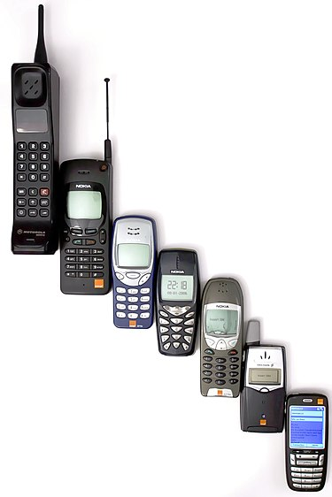

მობილური ტელეფონი — ტელეფონი, რომელსაც ფართო გეოგრაფიულ არეალში მოძრაობის მიუხედავად, რადიოსიგნალის საშუალებით შეუძლია სატელეფონო ზარების მიღება და განხორციელება. მოწყობილობა ამას ფიჭური კავშირის საშუალებით აკეთებს, რასაც მობილური ტელეფონის ოპერატორი უზრუნველყოფს. ამის საპირისპიროდ, არსებობს რადიოტელეფონი, რომელიც მხოლოდ მოკლე მანძილზე, საკუთარი საბაზო სადგურის ახლომახლო მოქმედებს. გარდა სატელეფონო ფუნქციისა, თანამედროვე მობილურ ტელეფონებს სხვა მრავალი სერვისის მხარდაჭერაც აქვს, მათ შორისაა მოკლე ტექსტური შეტყობინებები, მულტიმედიური შეტყობინებები (MMS), ელექტრონული ფოსტა, წვდომა ინტერნეტთან, ახლო მანძილის უკაბელო კომუნიკაციები (infrared, Bluetooth), ბიზნეს აპლიკაციები, თამაშები და ფოტოგრაფია. მობილურ ტელეფონებს, რომელთაც ეს და სხვა ზოგადი კომპიუტერული შესაძლებლობები აქვს, სმარტფონი ეწოდება. პირველი ხელით სატარებელი ტელეფონი 1973 წელს კომპანია მოტოროლას თანამშრომლებმა, ჯონ ფრენსის მიტჩელმა და დოქტორმა მარტინ კუპერმა წარმოადგინეს. მათ შექმნეს მოწყობილობა, რომელიც 2 კილოგრამს იწონიდა. 1983 წელს, გამოვიდა პირველი კომერციული მობილური Motorola DynaTAC. 1983-დან 2014 წლამდე, მობილური ტელეფონების რაოდენობა ნულიდან 7 მილიარდამდე გაიზარდა; პროპორციულად 100%-ით მოიცვა მსოფლიო მოსახლეობა და ეკონომიკური პირამიდის ფსკერამდე დავიდა. 2014 წლისათვის, მობილური ტელეფონების მოწინავე მწარმოებლები იყვნენ Samsung, Nokia, Apple და LG.
ხელით სატარებელი მობილური რადიოტელეფონი რადიოინჟინერიის ძველი ოცნებაა. მისი ერთ-ერთი ყველაზე ადრეული აღწერის ხილვა შესაძლებელია ამერიკელი მწერლის, რობერტ ჰაინლაინის 1948 წლის მხატვრულ ნოველაში „კოსმოსური კადეტი“. ნაწარმოების მთავარი გმირი, რომელიც კოლორადოდან აიოვაში, თავის სახლში მიდის, მამამისისგან სატელეფონო ზარს იღებს ტელეფონზე, რომელიც მას ჯიბეში უდევს. ათი წლის შემდეგ, ართურ კლარკის ესეში აღწერილია „პერსონალური პატარა და კომპაქტური გადამცემი, რომლის ტარებაც ყველა ადამიანს შეუძლია“. კლარკი წერს: „მოვა დრო, როცა ჩვენ დედამიწის ნებისმიერ წერტილში შეგვეძლება სხვა ადამიანისთვის დარეკვა, უბრალოდ ნომრების აკრეფით“. კლარკის ხედვით, ამ მოწყობილობას ასევე ექნებოდა გლობალური პოზიციონირების სისტემა, ისე, რომ „არასოდეს არავინ აღარ დაიკარგება“. მოგვიანებით, „მომავლის პროფილებში“ მან იწინასწარმეტყველა, რომ მსგავსი მოწყობილობა 1980-იანი წლების შუაში გამოჩნდებოდა. ფიჭური ტელეფონების ადრეულ წინაპრებს შორისაა გემებისა და მატარებლების ანალოგური რადიოტელეკომუნიკაციები. ნამდვილი მობილური ტელეფონების შექმნის ისტორია მეორე მსოფლიო ომის შემდეგ იწყება. მობილური ტელეფონების განვითარება თანმიმდევრული თაობებით იწყება „0G“-დან (0 თაობა), მაგალითად Bell System-ის მობილური ტელეფონების სერვისი და მისი მემკვიდრე Improved Mobile Telephone Service-ი. 0G“ სისტემები ფიჭური არ იყო, ჰქონდა რამდენიმე ერთდროული ზარის მხარდაჭერა და საკმაოდ ძვირიც იყო. ხელით სატარებელი პირველი მობილური ტელეფონი 1973 წელს კომპანია მოტოროლამ წარმოადგინა. პირველი კომერციული ავტომატიზებული ფიჭური ქსელი 1979 წელს იაპონიაში, კომპანია NTT-მა გაუშვა. 1981 წელს მას მოჰყვა კომპანია Nordic Mobile Telephone, რომელმაც ქსელი ერთდროულად გაუშვა დანიაში, ფინეთში, ნორვეგიასა და შვედეთში. 1980-იანი წლების შუაში მათ სხვა ქვეყნები მიჰყვნენ. პირველი თაობის სისტემებს („1G“) გააჩნდა ოდნავ მეტი 0G-ზე მხარდაჭერა, მაგრამ ჯერ კიდევ ანალოგურ ტექნოლოგიებს იყენებდნენ. 1991 წელს ფინეთში, კომპანია Radiolinja-მ GSM სტანდარტში გაუშვა მეორე თაობის (2G) ციფრული ფიჭური ტექნოლოგია, რამაც ამ სექტორში ნამდვილი ქარიშხალი გამოიწვია და სასტიკ ბრძოლაში უხმო 1G-ზე მომუშავე მობილურ ოპერატორებს. 2001 წელს იაპონიაში, კომპანია NTT DoCoMo-მა გაუშვა WCDMA სტანდარტზე მომუშავე მესამე თაობის (3G) ქსელი. ამას მოჰყვა HSPA ოჯახზე დაფუძნებული 3.5G და 3G+ ქსელები, რომლებიც მონაცემთა უსწრაფესი გადაცემისა და შესაძლებლობებისათვის UMTS სისტემებს იყენებს. 2009 წლისთვის ნათელი გახდა, რომ ზოგიერთ შემთხვევებში, 3G ქსელები უძლური იყო ისეთი ინტენსიური გამტარუნარიანობის აპლიკაციების წინაშე, როგორიცაა მაგალითად სტრიმინგ-მედია. თანდათანობით, ინდუსტრიამ მონაცემების ოპტიმიზების მიზნით მე-4 თაობის ტექნოლოგიებზე მუშაობა დაიწყო, რომლის სიჩქარეც არსებულ 3G ტექნოლოგიებზე ათჯერ სწრაფი უნდა ყოფილიყო. კომერციულად ხელმისაწვდომი პირველი ორი ტექნოლოგია, რომელიც 4G-დ შეირაცხა, იყო WiMAX (გაუშვა კომპანია Sprint-მა აშშ-ში) და LTE სტანდარტი, რომელიც მომხმარებლებს პირველად სკანდინავიაში, კომპანია TeliaSonera-მ შესთავაზა.